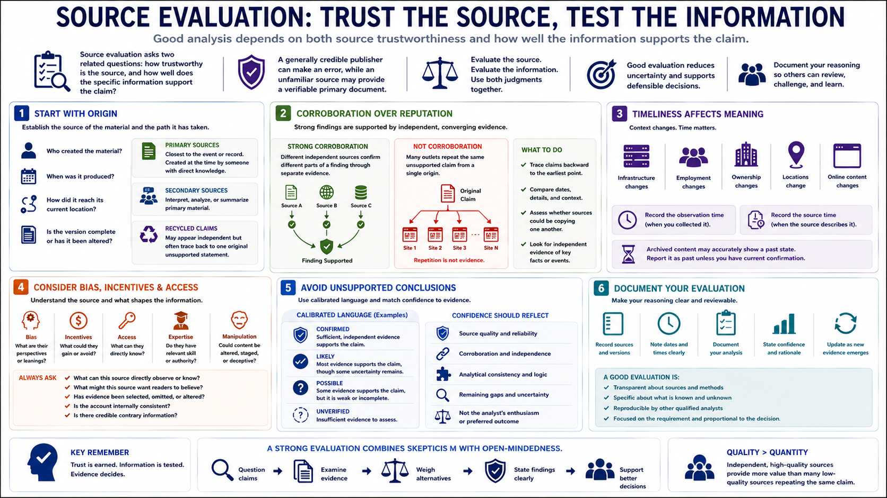

Source Evaluation and Reliability
Connecting to LMS... Progress: in progress

Narration
Source evaluation asks two related questions: how trustworthy is the source, and how well does the specific information support the claim? A generally credible publisher can make an error, while an unfamiliar source may provide a verifiable primary document.
Begin with origin. Identify who created the material, when it was produced, how it reached the current location, and whether the version is complete. Primary sources are closest to the event or record. Secondary sources interpret primary material. Recycled claims may look independent even when every article traces back to one unsupported statement.
Corroboration is strongest when independent sources confirm different parts of a finding through separate evidence. Repetition alone is not corroboration. Analysts should trace claims backward, compare dates and details, and note whether sources could be copying one another.
Timeliness affects meaning. Infrastructure, employment, ownership, locations, and online content change. Record the observation time and the time the source describes. An archived page may accurately show a past state but mislead if reported as current.
Consider bias, incentives, access, expertise, and possible manipulation. Ask what the source could directly know, what it may want readers to believe, and whether evidence has been selected or altered. Evaluate internal consistency and look for credible contrary information.
Avoid unsupported conclusions. Use calibrated language such as confirmed, likely, possible, or unverified according to organizational standards. Confidence should reflect source quality, corroboration, analytical consistency, and remaining gaps, not the analyst's enthusiasm.